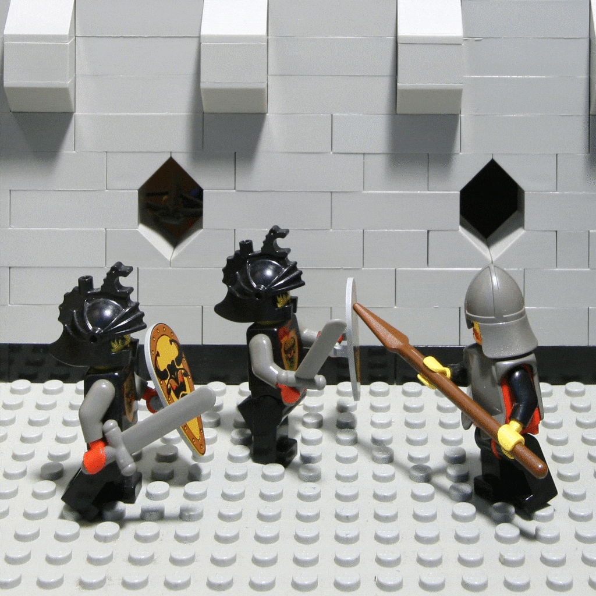
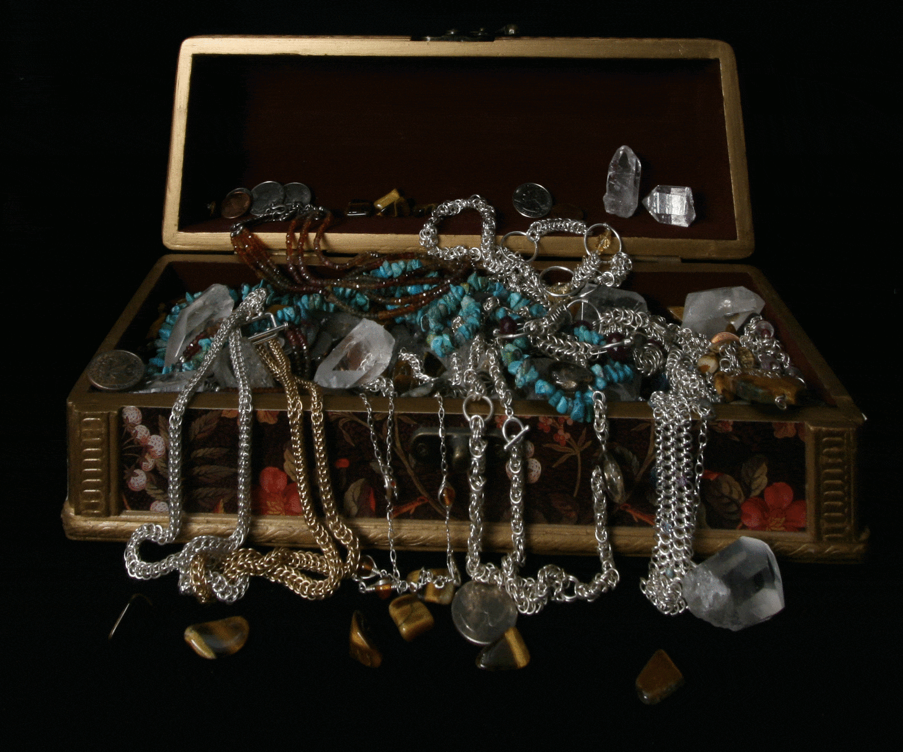

Summary
In this project, I am given lightfield data, which are sets of images, each set refering to a certain scene, that form a 17 x 17 matrix. The project goal is to shift and sum up these pictures to one image in various ways to program focus and apeture change in. In other words, I am supposed to make it like I am changing the focus and an apeture of an image.
Depth Refocusing with Lightfield Data
For Depth refocusing, I shifted each image by C * (im.x, center.x) to the right and C * (im.y, center.y) down. C is the measure of where I want to focus. C = 0 is if I focus around the center. The lesser C is, the closer towards the camera I am focusing to. The greater C is, the farther. C can be negative or positive. im.x and im.y are the x and y coords of the image I want to shift, and center.x and center.y are the x and y coords of the center image of my set/matrix, that I want to move my image towards


Apeture Adjustment with Lightfield Data
For apeture adjustment, I had settings of n = 0 to 8 to represent how large my programmatic apeture will be. The variable n corresponds to how many images up, down, left and right from the middle we will use to sum up to our final image. In other words, if n = 1, then I have a 3x3 matrix I sum my new picture with. If n = 4, I have a 9x9 matrix. The larger the number, the larger my apeture is on the picture.
 